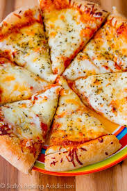
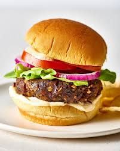

<!--
  Generated template for the MenuPage page.

  See http://ionicframework.com/docs/components/#navigation for more info on
  Ionic pages and navigation.
-->
<ion-header>
  <ion-navbar>
    <ion-buttons start>
      <button ion-button menuToggle><ion-icon name="menu"></ion-icon></button>
    </ion-buttons>
    <ion-title>Menu</ion-title>
  </ion-navbar>
</ion-header>

<ion-content padding>
  <ion-list>
    <ion-item>
      <ion-thumbnail item-start>
        
      </ion-thumbnail>
      <h2>pizza</h2>
      <p>rs 100</p>
      <button
        ion-button
        clear
        item-end
        (click)="Openchkpg('you ordered pizza')"
      >
        Buy
      </button>
    </ion-item>
  </ion-list>

  <ion-list>
    <ion-item>
      <ion-thumbnail item-start>
        
      </ion-thumbnail>
      <h2>burger</h2>
      <p>rs 50</p>
      <button
        ion-button
        clear
        item-end
        (click)="Openchkpg('you ordered burger')"
      >
        Buy
      </button>
    </ion-item>
  </ion-list>
</ion-content>
